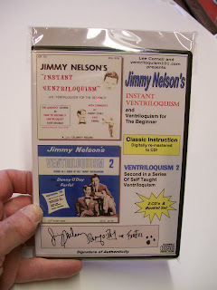

Learn from Jimmy Nelson!
3/5/2010
{kind=link}

Jimmy Nelson's "Instant Ventriloquism and Ventriloquism
for the Beginner" and "Ventriloquism 2" Audio CD Course-
The same course Jeff Dunham used to learn ventriloquism!
Finally, Jimmy's classic and historic instructional record albums have been professionally and digitally re-mastered into this two CD set course collection.
The set also includes the "Instant Ventriloquism" follow along routines (now in booklet form) which came with the original record album.
for the Beginner" and "Ventriloquism 2" Audio CD Course-
The same course Jeff Dunham used to learn ventriloquism!
Finally, Jimmy's classic and historic instructional record albums have been professionally and digitally re-mastered into this two CD set course collection.
The set also includes the "Instant Ventriloquism" follow along routines (now in booklet form) which came with the original record album.
BONUS! - A very limited quantity of the case covers were
autographed by Jimmy, Danny and Farfel, and this is one of them, provided by Lee Cornell for next week's drawing on this blog! (If you just can't wait, you can purchase this CD set Here. )